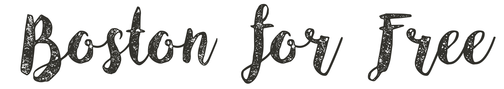
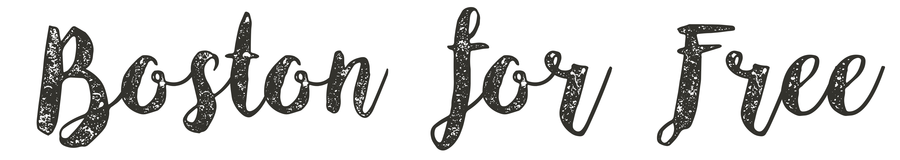

(Left to Right) Sohini Shah, Raphi Kang, Seyla Phan, Zayba Qamar
This website was created as a final project in a Girls Who Code Summer Immersion Program at Akamai Boston. Our mission is to help young adults find fun events and activities to do for FREE! This is important to us because all four of us are in high school and we find it difficult to research free activities in our area in a fast and easy way.
Contact us at gwc.bostonforfree@gmail.com